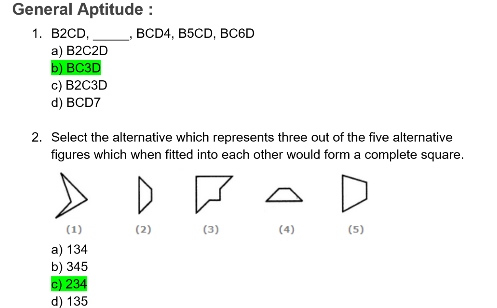
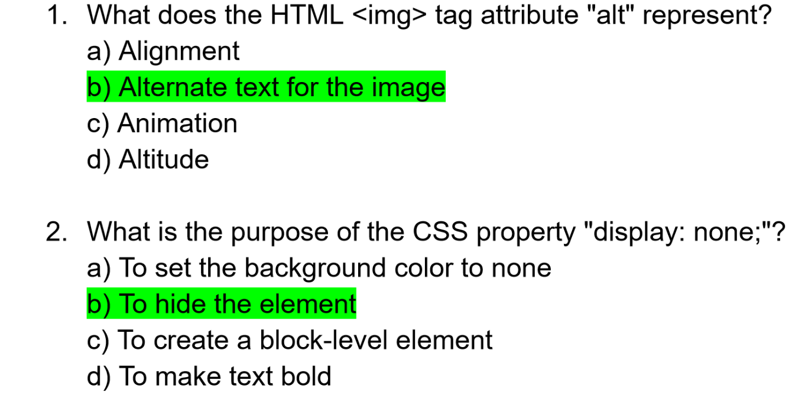

Hello Everyone!
Welcome to the Live Stream
Nibble Computer Society
Press
Spacebar for next slide. Esc or 'o' for overview.
Our objective for today's live stream is to walk you through our recruitment process.
Link: https://web-recruitment-ncs.netlify.app/#/
Solving Some Common Doubts (FAQs)
Kitne padhe ki ncs me ho jaye - html, css se bas ho jayega?
Make sure to dedicate yourself to studying diligently to maximize your chances of being selected.Familiarize yourself with both front-end and back-end development, and consider specializing in one based on your interests and strengths."
Are there any specific programming languages or technologies used in the web development club apart from html,css and js?
At your level just HTML, CSS and JS is okay, but you need to learn “React” for helping in making projects given by society. So, why not learn it beforehand…
How many members get selected in the web club?
or
How many members for frontend and backend each?
The competition will be among you first year’s, we need at least “Two” at max “Four” but if someone so good comes up we would like to have him/her on board as well. So, all in all we will pick the best ones and most importantly the ones who believes in themselves to be the best.
Should we need to learn React or any other framework for selection?
It’s not a must but having learnt the basics will help you in contributing to projects given here - it’s like we need more guys who know React so it’s a want not a need. I know you get it
How one would be selected in the web club - like what would be the criteria or process?
- Outperform the majority in the aptitude test.
- Perform well in task completion round.
- Showcase your communication skills in Group
- Discussion round and the final boss is the interview.
What projects are completed by the web club? Our society website, codepad, and only available to ncs members webapps(can’t reveal) and many more.
The NCS website, codepad, websites for zealicon events and many other confidential webapps revealed only to society members and many more.
What does the web club do?
We hold workshops, internally as well as for everyone. We explore and cooperate with eachother on different kinds of projects.
Why Web club and not any other club?
Other clubs are not bad - go ahead,join them but if your interest peaks in websites or you are just starting in the tech field then web is the best possible option.
You could freely switch between clubs in the future and it's not like you would be stuck with web for four years, if you are in web club.
Aptitude Round
Aptitude test
- This is the first round and the simplest one.
- The round consists of 30 General Aptitude questions covering mathematics, verbal and non-verbal ability to test your fundamental skills.
- Additionally, there will be 30 Web Development Specific questions to assess your knowledge in the field.
Here are a few example for you:
Domain specific questions:

What do we judge?
- Numerical skills: Assess how well you can solve math-related problems.
- Verbal skills: Your ability to understand written information and communicate.
- Logical thinking: Gauge your ability to analyze information and make logical deductions.
- Problem-solving abilities: Observe how you solve problems effectively.
- Basic Knowledge: Assess your foundational understanding of web development.
Task Round

what happens in task round
Task Round is an exciting opportunity for you to showcase your practical web development skills. In this round, you will be given a time frame of 2-3 days or 1-2 hours to complete the task with you web development knowledge.
Display all your skills without hiding anything for maximizing your chances.
*Any attempts of cheating will be disqualified immediately.What do we judge?
- HTML Structure and Semantics
- CSS Styling: Consistent design and responsiveness
- JavaScript Functionality: Interactive features
- Code Quality: Clean and organized code.
- Creativity: Unique design elements or features.
- Meeting Requirements: Fulfilling project objectives within the given timeframe.
A few examples of tasks
- Cloning Website
- Portfolio Website
- Sign Login API
Group Discussion Round
GD?
The GD (Group Discussion) round in recruitment is a way for us to assess how well candidates can communicate and collaborate with others in a group setting.
During this round, a group of 6 candidates will be given a topic or a problem to discuss. You are expected to express your opinion, listen to others, and contribute constructively to the conversation.
What do we judge?
- Communication skills: Evaluate your clarity, fluency, and persuasiveness.
- Listening skills: Assess your engagement, empathy, and respect for diverse viewpoints.
- Collaboration: Observe your contribution, encouragement of others, and teamwork.
- Leadership potential: Assess your initiative, facilitation, and consensus-building abilities.
- Adaptability: Observe your response to change and openness to new ideas.
These could be your topics for the Group discussion:
- Is social media actually connecting people?
- Hard work vs smart work
The Interview
what is it?
This is the final and the most crucial round of our recruitment process. In this round the interviewer asks questions to learn more about the candidate's qualifications, experiences, skills, and personality.
The purpose of the interview is for us to assess whether the candidate is a good fit for the position and the society culture.
What do we check?
- Depth of Knowledge
- Problem-solving Ability
- Understanding of Core Concepts
- Critical Thinking Skills
- Communication Skills
- Ability to handle a stressful environment
- Dreams and aspirations
- Overall Aptitude and Potential
You could be asked such questions in the interview among many others:
- Why did you use tailwind CSS? List some of its advantages over other similar technologies
- Where do you see yourself in 4 years?
- What is event delegation in JavaScript?
That's All Folks
For Any Queries

Thank You
Nibble Computer Society